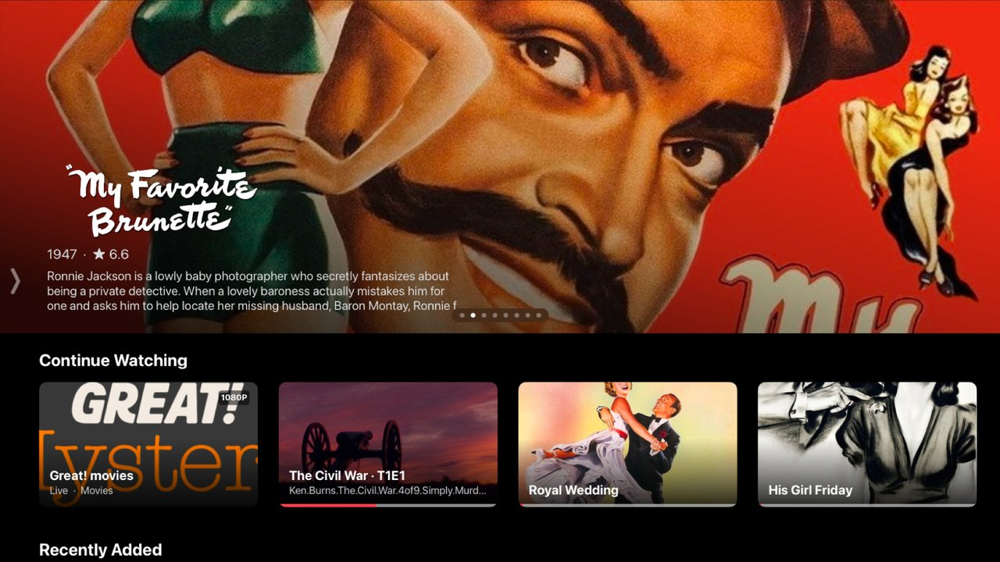
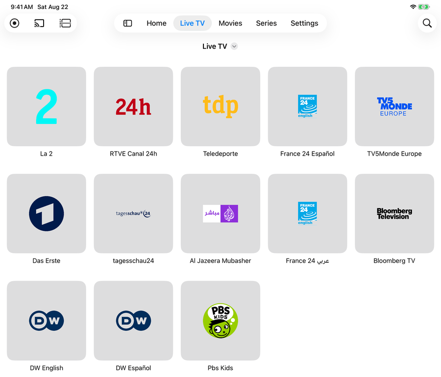
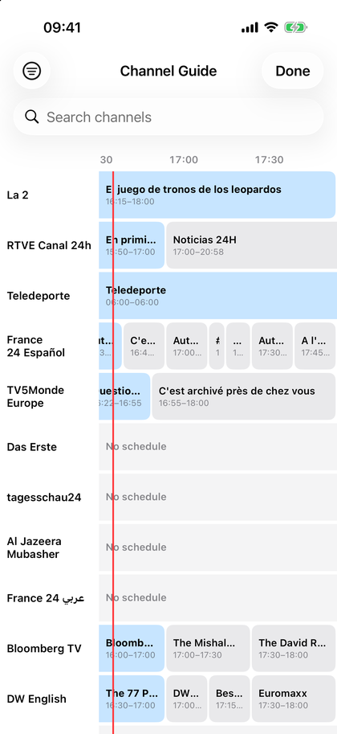

Your playlists, finally at home on Apple.
Easy IPTV plays your own M3U playlists and Xtream Codes account on iPhone, iPad and Apple TV — a proper native interface, no ads, and automatic failover so a dead source doesn't end your evening.
Free to use · One download for iPhone, iPad and Apple TV



Real screens, with free public channels and public-domain films — Easy IPTV ships no content.
Built around reliability
It keeps playing
Channels with several sources switch quality or source automatically when one drops — so the stream stays alive instead of freezing. A watchdog spots frozen streams and reconnects.
Made for each screen
Focus-first navigation with the Siri Remote on Apple TV, and a real touch interface on iPhone and iPad — not one interface stretched across both.
Bring your own
Xtream Codes API or M3U / M3U8 playlists. Add several providers and merge them into a single catalogue, rename or hide what you never watch.
A guide you can actually use
Programme guide with channel logos, favourites first and search. On iPhone and iPad it's a full touch grid; where your provider offers an archive, you can scroll back and watch what already aired.
Recording and Picture in Picture
Save what you're watching to your device and keep a channel in a floating window while you browse. Both on iPhone and iPad, included with PRO.
No ads. Ever.
No banners, no interstitials, no account to create. The app is in English, Spanish, French, Italian, German and Portuguese.
Free and PRO
The whole Apple TV app is free, and so is everyday use on iPhone and iPad: one provider, live TV, the guide, films and series, Continue Watching. PRO adds the multi-device side — merging several providers, Picture in Picture, recording, external EPG and syncing your state across devices. It's €9.99 a year with a 7-day free trial, or a one-time purchase if you'd rather not subscribe. Family Sharing is on for both.
How it works
Easy IPTV is a player only. It ships with no channels and no content. You bring your own IPTV subscription — or a public, legal playlist such as the ones from iptv-org — add it once in Settings, and start watching. We don't host, provide or link to any content.
Your provider's credentials stay on your device. The app sends us anonymous usage statistics (which features get used, app version, device type and country — never what you watch, never your playlists or credentials), and you can switch them off in Settings at any time. The details are in the privacy policy.